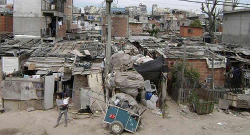

Real Chubut - Agencia de Noticias


Por la devaluación y el shock tarifario, la pobreza volverá a alcanzar 29%

El combo devaluación, inflación, suba de tarifas y menor crecimiento del empleo empujará a una nueva alza del índice de pobreza que podría colocarse en el 29% para fin de año, y volver así a niveles de dos años atrás. "Tendrá que esperarse un incremento de la pobreza en este primer semestre",advierte Agustín Salvia, director del Observatorio de Deuda Social de la UCA en diálogo con ámbito.com y estima que para la primera mitad del año el índice subirá dos puntos a 27% y espera dos puntos más para diciembre.
La última medición del INDEC indicó un descenso al 25,7% en el último semestre del 2017, siendo la baja más pronunciada en la presidencia de Mauricio Macri. Ese dato fue anunciado con bombos y platillos por el gobierno, incluso el jefe de Estado brindó un mensaje desde la quinta de Olivos donde dijo estar contento y que ese número "confirma que estamos en buen camino". Sin embargo, desde aquel momento las tendencias de las variables económicas cambiaron.
La turbulencia cambiaria que dejó solo en mayo una suba del 25% del precio de dólar, una inflación acumulada a abril de 9,6%,paritarias que cerraron acorde a la meta oficial del 15%, con la consecuente pérdida del poder del salario real, el veto a la ley que proponía retrotraer la suba de tarifas y los aumentos de servicios, transporte, prepagas y naftas que se vienen sucediendo desde principios de año ofrecen un panorama propicio para el incremento del número de pobres.
"Con esta lógica casi seguro (la pobreza) va a aumentar dos puntos para mediados de año",sentencia Salvia y proyecta para el resto de 2018: "Después hay que ver qué pasa en el segundo (semestre), es posible que se incremente aún más la pobreza y volvamos al 28% o 29%". Y advierte: "Todo esto sin que haya una crisis económica todavía mayor".
Macri pidió que su gobierno sea juzgado en base al descenso de la pobreza. Lo dijo en septiembre de 2016 cuando el INDEC presentó los primeros índices luego de tres años sin mediciones. Los datos correspondían al segundo trimestre del año y marcaron un 32,2% de pobreza y 6,3% de indigencia.
"Hoy sabemos cuál es la realidad. Este punto de partida es sobre el cual acepto ser evaluado como Presidente, por si pudimos reducir la pobreza en este gobierno", aseguró el mandatario sobre el primer dato. Las mediciones sucesivas mostraron bajas: 30,3% (II semestre 2016), 28,2% (I semestre 2017) y 25,7% (II semestre 2017).
De cumplirse la proyección de dos puntos a junio y dos a diciembre de este año, puede esperarse una suba de la pobreza en el primer semestre de 2018 a 27,7%, cerca de los mismos niveles del año pasado y de 29,7% para el segundo, rozando la medición de diciembre de 2016. Es decir, los 2.700.000 personas que lograron salir de la pobreza y 610 mil que dejaron de vivir en la indigencia para fines del año pasado regresarán al mismo estadio y se sumarán más.
Para el especialista se esperaba un leve incremento en la pobreza en el primer semestre de este año porque la medición de 2017 confrontaba con el primer año de Macri donde se produjeron dos fenómenos: se publicó el primer dato oficial luego de tres años y ese dato a su vez incluía la devaluación de los primeros meses de gobierno. Pese a ello, no se esperaba una suba tan abrupta de la pobreza como la que se percibe.
Sobre los números del primer semestre de este año, Salvia explica que "se suponía que iba a haber un impacto (negativo) y que el segundo semestre podría ser relativamente mejor para compensar una pérdida del poder adquisitivo del primero, pero difícilmente creo que ocurra dado que el segundo semestre puede ser incluso peor", destaca. "La ecuación cambió, la devaluación hace que la inflación vaya a ser todavía mayor de lo esperado y que incluso devenga en un proceso más recesivo", lanza.
Las paritarias que ya cerraron lo hicieron con un porcentaje más acorde a la meta oficial que a las estimaciones de los privados que ya hablan de más del 28% de inflación para todo 2018."Difícilmente haya compensación con los aumentos salariales de abril y mayo, los primeros porcentajes de aumento de las paritarias ni tampoco las actualizaciones de los programas sociales", razona sobre este punto Salvia.
Además, según el investigador del Conicet la indigencia crecerá en los mismos niveles que la pobreza y destaca que se afianza cada vez más la pobreza estructural en Argentina. "Los segmentos que están mal hoy, ya estaban mal a fin del año pasado y la mejora allá en el horizonte no aparece en materia de ingresos", redondea.
Recién en septiembre se conocerá la cifra oficial del INDEC, pero con un acumulado de inflación de enero a abril del 9,6% y una canasta básica con una suba del 9,27% en el mismo período, parecen indicar que habrá mayor número de pobres en la Argentina. "Hoy todas las condiciones macroeconómicas son inestables, pero no son catastróficas, todavía no", concluye con cierto optimismo Salvia.
Fuente: Ambito